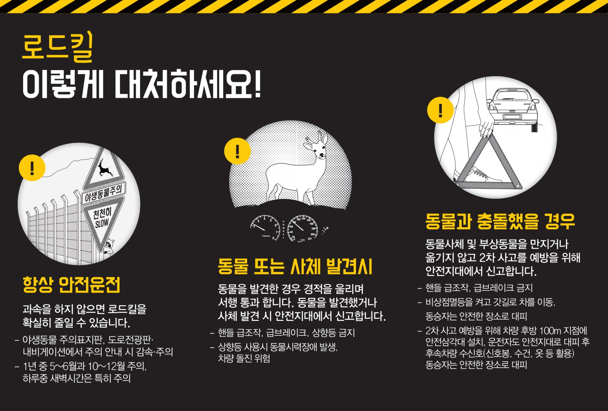

동물보호법
동물보호법은 동물에 대한 학대행위의 방지 등 동물을 적정하게 보호·관리하기 위하여
필요한 사항을 규정함으로써 동물의 생명과 그 안전을 보호하고 복지를 증진하며 생명의 존중 등 국민의 정서 함양에 이바지함을 목적으로 합니다.
동물학대신고
동물을 대상으로 정당한 사유 없이 불필요하거나 피할 수 있는 신체적 고통, 정신적 학대, 스트레스를 주는 행위,
관리태만(굶주림, 질병 등에 대한 조치를 방치하는 행위 등)을 동물학대라고 합니다. 동물학대 신고 시, 처벌은 아래와 같습니다.
동물학대 처벌
1. 동물을 학대하면 1년 이하의 징역 또는 1천만원 이하의 벌금형에 처해질 수 있습니다. (동물보호법 제46조 제1항)
2. 동물을 유기하면 100만원 이하의 과태료가 부과될 수 있습니다. (동물보호법 제47조 제1항)
3. 동물학대행위 영상물을 판매, 전시, 전달, 상영하거나 인터넷에 게재하면 300만원 이하의 벌금에 처해집니다. (동물보호법 제46조 제3항)
동물학대 목격 시, 반드시 112(경찰서)로 신고합니다.
신고하여 학대가 발생한 장소, 학대행위 등을 설명하면, 동물의 안전을 지킬 수 있고 동물학대 재발을 방지할 수 있습니다.
로드킬 발견 시
로드킬이란, 동물들이 도로를 건너다가 차에 치여 죽음에 이르는 경우를 말합니다. 한해 신고사례만 봤을 때, 약 2,000여 마리가 로드킬을 당하고 있습니다.
운전 시 생각보다 많은 동물 로드킬을 발견하게 됩니다.
죽은 동물을 도로위에 그대로 방치하게 되면 2차, 3차의 사고가 발생할 수 있기 때문에 빠른 조치를
취해야 하는데 보통 신고방법을 몰라 그대로 방치하게 되는 경우가 많습니다.

서 울 : 다산콜센터 120
그 외 지역 : 지역번호 +
직접 해결하기 위해 차에서 내리면, 또 다시 사고로 이어질 수 있어 매우 위험합니다.
로드킬 발견 시 위의 번호로 즉시 신고하여, 발견 장소를 알려주시면 동물을 안전하고 빠르게 수습할 수 있습니다.